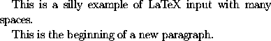
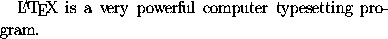

LaTeX treats the carriage return at the end of a line as though it were a blank space. Similarly LaTeX treats tab characters as blank spaces. Moreover, LaTeX regards a sequence of blank spaces as though it were a single space, and similarly it will ignore blank spaces at the beginning or end of a line in the input file. Thus, for example, if we type
This is
a
silly
example of LaTeX input
with many spaces.
This is the beginning
of a new paragraph.
then we obtain

It follows immediately from this that one will obtain the same results whether one types one space or two spaces after a full stop: LaTeX does not distinguish between the two cases.
Any spaces which follow a control sequence will be ignored by LaTeX.
A space following a control sequence may be obtained by preceding
the space with a backslash \. For example,
the sentence
is obtained by typing
(Here the control sequence\LaTeX\ is a very powerful computer typesetting program.
\LaTeX is used to produce
the LaTeX logo.)
A blank space should not occur in the input file after a left parenthesis or before a right parenthesis.